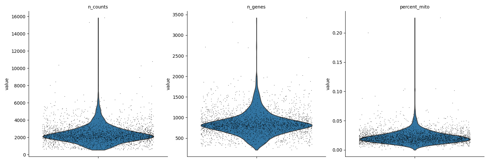
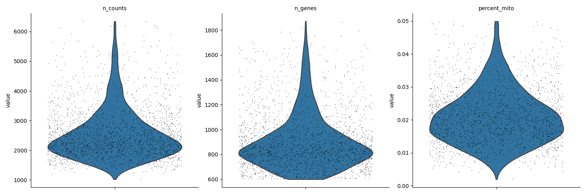

Note
Click here to download the full example code
performing filtering using besca¶
This example demonstrates the entire process of filtering out cells/genes ob subpar quality before proceeding with analysis.
import besca as bc
import scanpy as sc
import matplotlib.pyplot as plt
#load example dataset
adata = bc.datasets.pbmc3k_raw()
#set standard filtering parameters
min_genes = 600
min_cells = 2
min_UMI = 600
max_UMI = 6500
max_mito = 0.05
max_genes = 1900
visualization of thresholds¶
First the chosen thresholds are visualized to ensure that a suitable cutoff has been chosen.
#Visualize filtering thresholds
fig, ((ax1, ax2, ax3), (ax4, ax5, ax6))= plt.subplots(ncols=3, nrows=2)
fig.set_figwidth(15)
fig.set_figheight(8)
fig.tight_layout(pad=4.5)
bc.pl.kp_genes(adata, min_genes=min_genes, ax = ax1)
bc.pl.kp_cells(adata, min_cells=min_cells, ax = ax2)
bc.pl.kp_counts(adata, min_counts=min_UMI, ax = ax3)
bc.pl.max_counts(adata, max_counts=max_UMI, ax = ax4)
bc.pl.max_mito(adata, max_mito=max_mito, annotation_type='SYMBOL', species='human', ax = ax5)
bc.pl.max_genes(adata, max_genes=max_genes)
Out:
/Code/Besca/besca/besca/pl/_filter_threshold_plots.py:59: MatplotlibDeprecationWarning:
The 'basey' parameter of __init__() has been renamed 'base' since Matplotlib 3.3; support for the old name will be dropped two minor releases later.
/Code/Besca/besca/besca/pl/_filter_threshold_plots.py:60: MatplotlibDeprecationWarning:
The 'basex' parameter of __init__() has been renamed 'base' since Matplotlib 3.3; support for the old name will be dropped two minor releases later.
/Code/Besca/besca/besca/pl/_filter_threshold_plots.py:184: MatplotlibDeprecationWarning:
The 'basey' parameter of __init__() has been renamed 'base' since Matplotlib 3.3; support for the old name will be dropped two minor releases later.
/Code/Besca/besca/besca/pl/_filter_threshold_plots.py:185: MatplotlibDeprecationWarning:
The 'basex' parameter of __init__() has been renamed 'base' since Matplotlib 3.3; support for the old name will be dropped two minor releases later.
/Code/Besca/besca/besca/pl/_filter_threshold_plots.py:118: MatplotlibDeprecationWarning:
The 'basey' parameter of __init__() has been renamed 'base' since Matplotlib 3.3; support for the old name will be dropped two minor releases later.
/Code/Besca/besca/besca/pl/_filter_threshold_plots.py:119: MatplotlibDeprecationWarning:
The 'basex' parameter of __init__() has been renamed 'base' since Matplotlib 3.3; support for the old name will be dropped two minor releases later.
adding percent mitochondrial genes to dataframe for species human
/.local/lib/python3.7/site-packages/anndata/_core/anndata.py:1094: FutureWarning:
is_categorical is deprecated and will be removed in a future version. Use is_categorical_dtype instead
application of filtering thresholds¶
Using the chosen thresholds the data is filtered. Before and after filtering results are depicted to compare.
#visualize data before filtering
sc.pl.violin(adata, ['n_counts', 'n_genes', 'percent_mito'], multi_panel=True, jitter = 0.4)
print('The AnnData object currently contains:', str(adata.shape[0]), 'cells and', str(adata.shape[1]), 'genes')
print(adata)
#perform filtering
adata = bc.pp.filter(adata, max_counts=max_UMI, max_genes=max_genes, max_mito=max_mito,min_genes=min_genes, min_counts=min_UMI, min_cells=min_cells)
#visualize data after filtering
sc.pl.violin(adata, ['n_counts', 'n_genes', 'percent_mito'], multi_panel=True, jitter = 0.4)
print('The AnnData object now contains:', str(adata.shape[0]), 'cells and', str(adata.shape[1]), 'genes')
print(adata)
- 
- 
Out:
/.local/lib/python3.7/site-packages/anndata/_core/anndata.py:1192: FutureWarning:
is_categorical is deprecated and will be removed in a future version. Use is_categorical_dtype instead
/.conda/envs/besca_docs/lib/python3.7/site-packages/seaborn/_core.py:1303: UserWarning:
Vertical orientation ignored with only `x` specified.
/.conda/envs/besca_docs/lib/python3.7/site-packages/seaborn/_core.py:1303: UserWarning:
Vertical orientation ignored with only `x` specified.
/.conda/envs/besca_docs/lib/python3.7/site-packages/seaborn/_core.py:1303: UserWarning:
Vertical orientation ignored with only `x` specified.
/.conda/envs/besca_docs/lib/python3.7/site-packages/seaborn/_core.py:1303: UserWarning:
Vertical orientation ignored with only `x` specified.
/.conda/envs/besca_docs/lib/python3.7/site-packages/seaborn/_core.py:1303: UserWarning:
Vertical orientation ignored with only `x` specified.
/.conda/envs/besca_docs/lib/python3.7/site-packages/seaborn/_core.py:1303: UserWarning:
Vertical orientation ignored with only `x` specified.
The AnnData object currently contains: 2700 cells and 32738 genes
AnnData object with n_obs × n_vars = 2700 × 32738
obs: 'CELL', 'n_counts', 'n_genes', 'percent_mito'
var: 'ENSEMBL', 'SYMBOL'
started with 2700 total cells and 32738 total genes
/.local/lib/python3.7/site-packages/anndata/_core/anndata.py:1094: FutureWarning:
is_categorical is deprecated and will be removed in a future version. Use is_categorical_dtype instead
removed 15 cells that expressed more than 1900 genes
/.local/lib/python3.7/site-packages/anndata/_core/anndata.py:1094: FutureWarning:
is_categorical is deprecated and will be removed in a future version. Use is_categorical_dtype instead
removed 385 cells that did not express at least 600 genes
/.local/lib/python3.7/site-packages/anndata/_core/anndata.py:1094: FutureWarning:
is_categorical is deprecated and will be removed in a future version. Use is_categorical_dtype instead
removed 4 cells that had more than 6500 counts
/.local/lib/python3.7/site-packages/anndata/_core/anndata.py:1094: FutureWarning:
is_categorical is deprecated and will be removed in a future version. Use is_categorical_dtype instead
removed 0 cells that did not have at least 600 counts
/.local/lib/python3.7/site-packages/anndata/_core/anndata.py:1094: FutureWarning:
is_categorical is deprecated and will be removed in a future version. Use is_categorical_dtype instead
removed 18036 genes that were not expressed in at least 2 cells
/.local/lib/python3.7/site-packages/anndata/_core/anndata.py:1094: FutureWarning:
is_categorical is deprecated and will be removed in a future version. Use is_categorical_dtype instead
removed 17 cells that expressed 5.0 percent mitochondrial genes or more
finished with 2279 total cells and 14702 total genes
/.local/lib/python3.7/site-packages/anndata/_core/anndata.py:1192: FutureWarning:
is_categorical is deprecated and will be removed in a future version. Use is_categorical_dtype instead
/.conda/envs/besca_docs/lib/python3.7/site-packages/seaborn/_core.py:1303: UserWarning:
Vertical orientation ignored with only `x` specified.
/.conda/envs/besca_docs/lib/python3.7/site-packages/seaborn/_core.py:1303: UserWarning:
Vertical orientation ignored with only `x` specified.
/.conda/envs/besca_docs/lib/python3.7/site-packages/seaborn/_core.py:1303: UserWarning:
Vertical orientation ignored with only `x` specified.
/.conda/envs/besca_docs/lib/python3.7/site-packages/seaborn/_core.py:1303: UserWarning:
Vertical orientation ignored with only `x` specified.
/.conda/envs/besca_docs/lib/python3.7/site-packages/seaborn/_core.py:1303: UserWarning:
Vertical orientation ignored with only `x` specified.
/.conda/envs/besca_docs/lib/python3.7/site-packages/seaborn/_core.py:1303: UserWarning:
Vertical orientation ignored with only `x` specified.
The AnnData object now contains: 2279 cells and 14702 genes
AnnData object with n_obs × n_vars = 2279 × 14702
obs: 'CELL', 'n_counts', 'n_genes', 'percent_mito'
var: 'ENSEMBL', 'SYMBOL', 'n_cells'
Total running time of the script: ( 0 minutes 3.342 seconds)